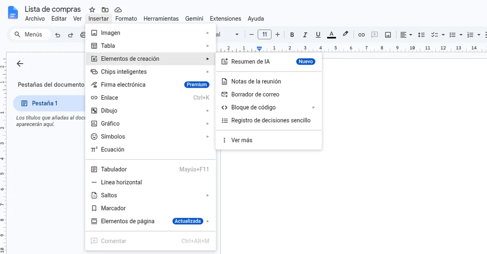
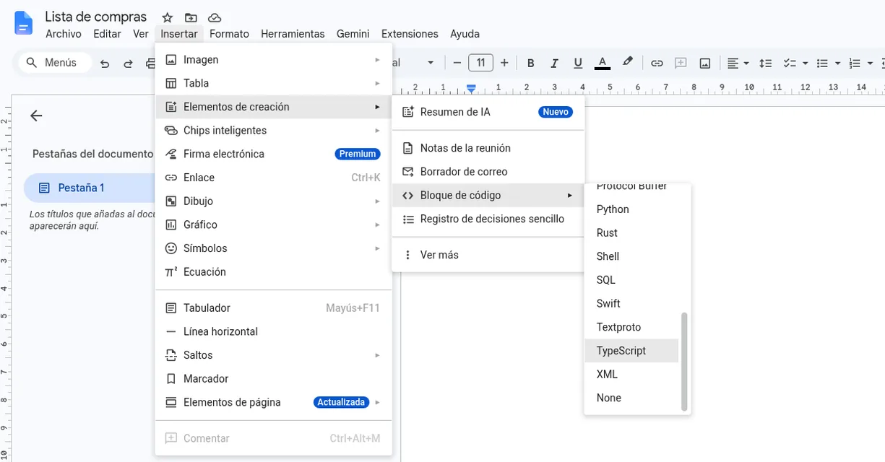
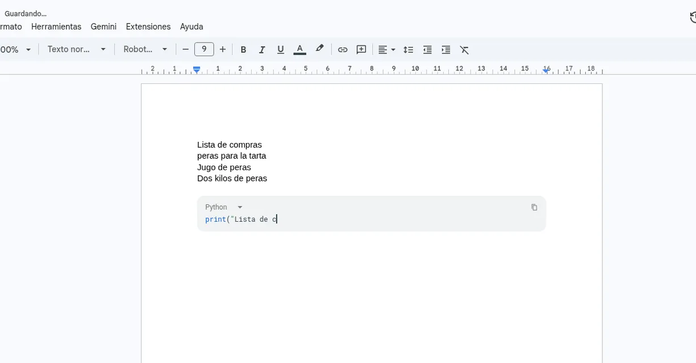
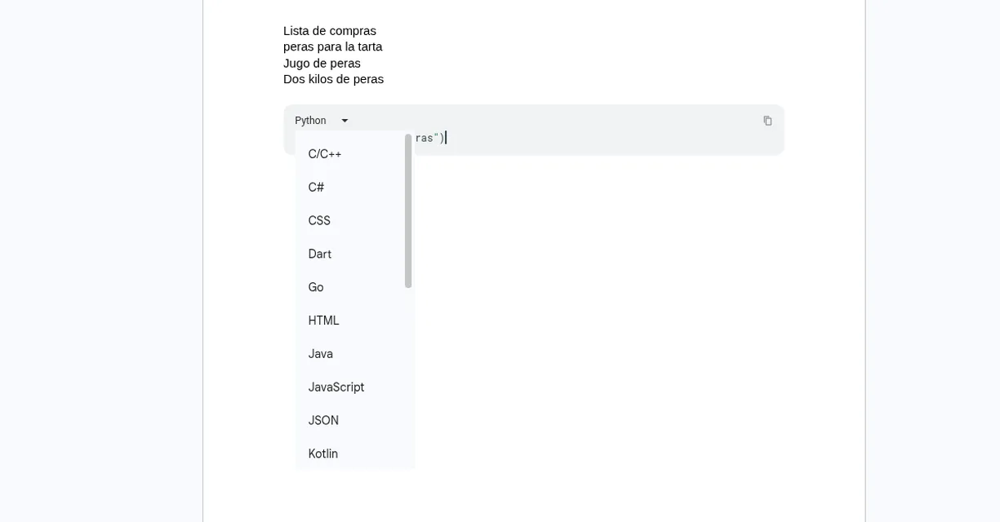
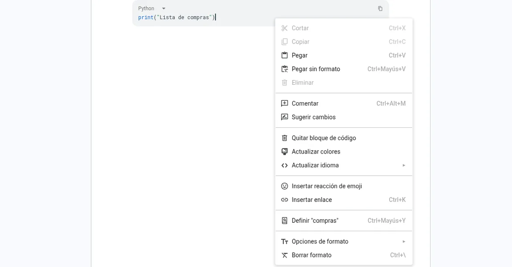
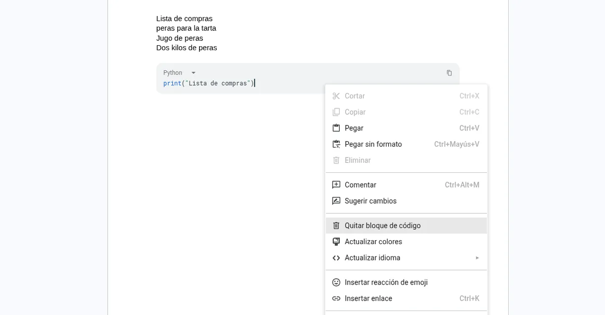
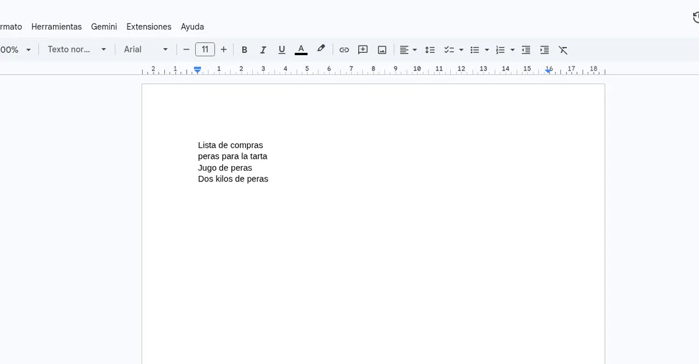
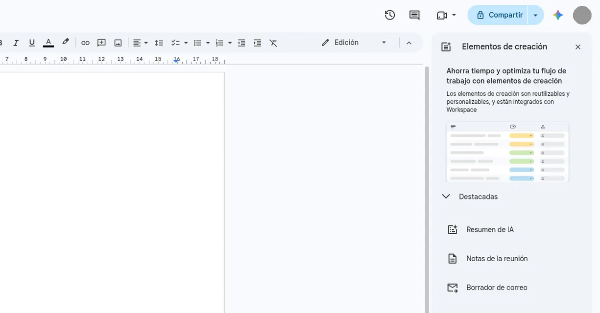
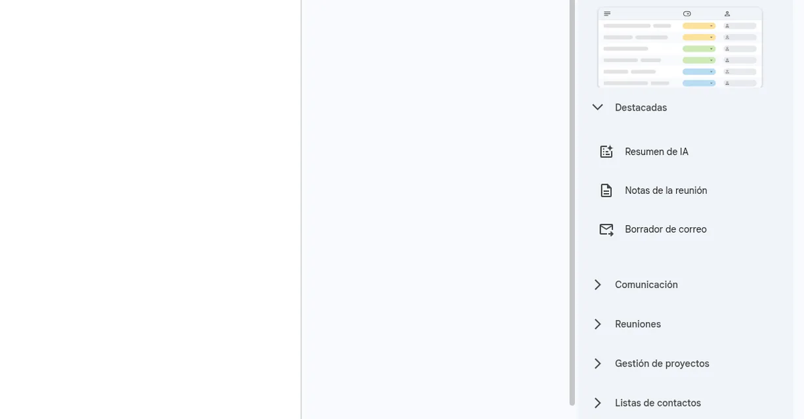
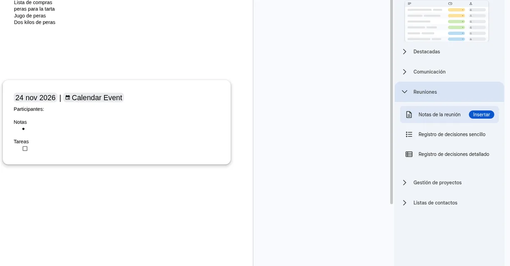

Curso de Google Documentos › Insertar › Lección 19
Lección 19 de 53 · menú Insertar
Bloque de código y notas de reunión en Google Docs: Elementos de creación
Fecha del video: · Programado
¿Sabías que Google Docs trae bloques listos para pegar? En Insertar → Elementos de creación tenés el Bloque de código, las Notas de la reunión y una galería completa en Ver más. Acá lo vemos paso a paso.
En el ejemplo usamos el documento «Lista de compras». Insertamos un bloque de código de prueba y al final lo quitamos, así el documento quedó como estaba.
Paso 1: abrí Insertar → Elementos de creación
Hacé clic en el renglón donde querés el elemento. Arriba, en la barra de menús, tocá Insertar y después Elementos de creación. Se abre un submenú con Resumen de IA (marcado como Nuevo), Notas de la reunión, Borrador de correo, Bloque de código, Registro de decisiones sencillo y Ver más.

Paso 2: Bloque de código → elegí el lenguaje
Pasá a Bloque de código: aparece la lista de lenguajes (se desplaza; al final están Python, Rust, Shell, SQL, Swift, Textproto, TypeScript, XML y None). En el ejemplo elegimos Python.

Paso 3: escribí tu código
El bloque aparece debajo de tu texto. Arriba a la izquierda tiene el desplegable del lenguaje (Python ▾) y arriba a la derecha un botón para copiar el código. Escribí adentro: en el ejemplo, print("Lista de compras"). El código se resalta con colores según el lenguaje.

Paso 4: cambiá el lenguaje cuando quieras
Tocá Python ▾ y se despliega la lista de lenguajes (C/C++, C#, CSS, Dart, Go, HTML, Java, JavaScript, JSON, Kotlin y más). Elegí otro y el resaltado se adapta.

Paso 5: quitá el bloque con clic derecho
Hacé clic derecho dentro del bloque. En el menú aparecen Quitar bloque de código, Actualizar colores y Actualizar idioma. Con Quitar bloque de código el bloque desaparece y el texto de arriba queda igual.



Paso 6: Ver más, todos los elementos por categoría
En Insertar → Elementos de creación → Ver más se abre a la derecha el panel Elementos de creación. Arriba están las Destacadas (Resumen de IA, Notas de la reunión y Borrador de correo) y abajo las categorías Comunicación, Reuniones, Gestión de proyectos y Listas de contactos. Para cerrarlo, tocá la X.


Paso 7: Notas de la reunión
En la categoría Reuniones están Notas de la reunión, Registro de decisiones sencillo y Registro de decisiones detallado. Al pasar el mouse por Notas de la reunión ves la vista previa: la fecha y el evento del Calendario, Participantes, Notas y Tareas, con el botón azul Insertar. Al insertarla elegís un evento de tu Calendario de Google y las notas se completan con sus datos (en el ejemplo no elegimos ningún evento).

Tip: los elementos que son tablas (como los registros de decisiones) se borran con clic derecho → Borrar tabla, según la ayuda de Google.
Fuentes oficiales: Cómo insertar componentes básicos (Elementos de creación) en Documentos de Google, Uso de Documentos de Google con un lector de pantalla (cómo insertar un bloque de código) y Agrega notas de la reunión a eventos de Calendario de Google. Mirá también el menú Insertar completo (video: Google Docs: menú Insertar paso a paso).
Mirá el Short
Estreno del Short: 01/12/2026 · 09:00 (hora Argentina)
Video relacionado: Google Docs: menú Insertar paso a paso (tutorial completo) — el video largo del menú Insertar (verlo en YouTube).
Fuente oficial: Ayuda de Editores de Documentos de Google. Capturas propias en un documento de ejemplo («Lista de compras»). El video usa voz generada con IA.